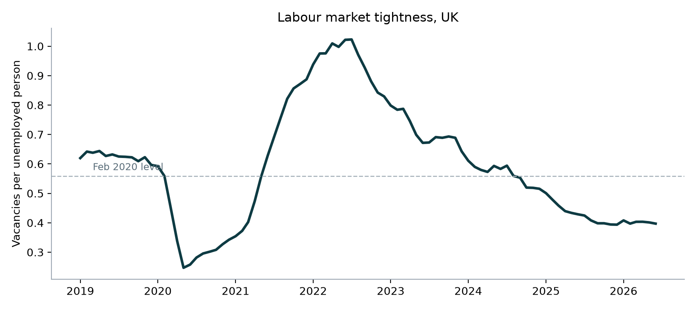
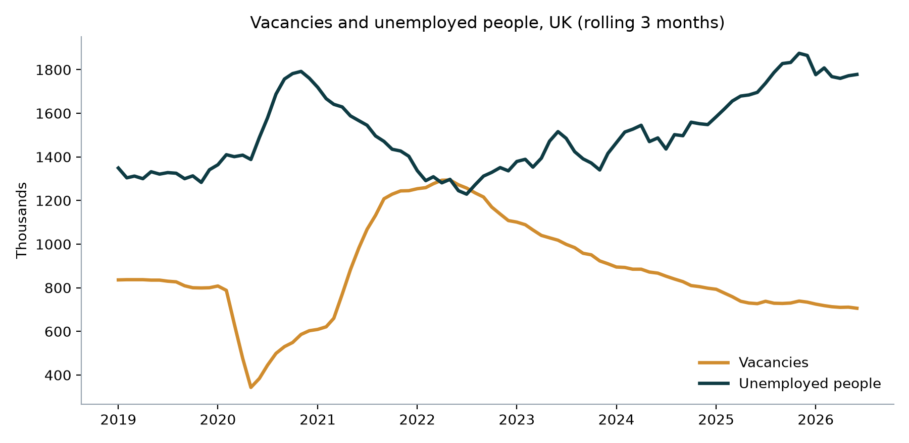
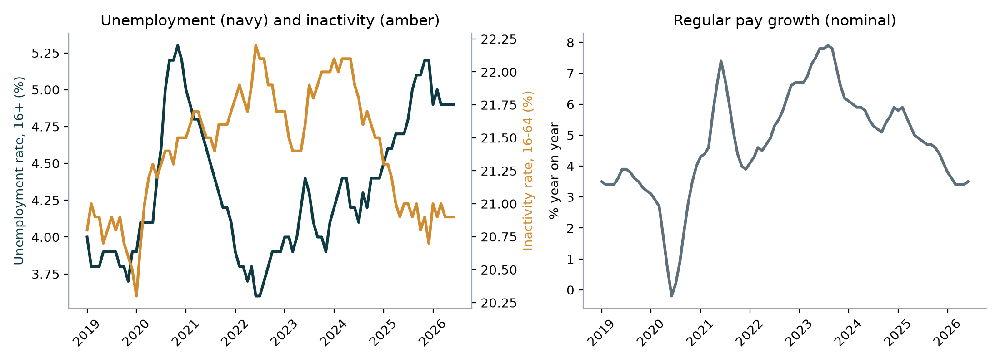

Why workforce planners need this
Hiring plans, time-to-fill targets, pay budgets and attrition forecasts all depend on the external labour market. An attrition rate that was normal in 2022 may be high in 2026, and a pay rise that kept people then may be more than the market needs now. This briefing sets out the external picture a workforce plan should start from.
Data
Six ONS time series, downloaded as CSV from the Labour Market Statistics release of 15 September 2026:
| Series ID | Measure | Coverage |
|---|---|---|
| AP2Y | Vacancies (thousands) | UK, all industries |
| MGSC | Unemployed people (thousands) | UK, aged 16+ |
| MGSX | Unemployment rate (%) | UK, aged 16+ |
| LF24 | Employment rate (%) | UK, aged 16 to 64 |
| LF2S | Economic inactivity rate (%) | UK, aged 16 to 64 |
| KAI9 | Regular pay growth, three-month average, year on year (%) | Great Britain, whole economy |
- Rolling periodsEach monthly figure covers three months. "Jun 2026" means April to June 2026.
- Common end dateThe series are joined on date and cut to the last month all six share, June 2026. The vacancy series runs one month further, to 702K for May to July.
- Tightness measureVacancies divided by unemployed people. Above 1 means more open jobs than jobseekers.
Method explained
Reading only the monthly rows
raw = pd.read_csv(file, header=None, names=["period", "value"], dtype=str)
monthly = raw[raw["period"].str.match(r"^\d{4} [A-Z]{3}$", na=False)]
monthly["date"] = pd.to_datetime(monthly["period"], format="%Y %b")ONS files mix header rows, annual, quarterly and monthly values in one column. A pattern match keeps only labels such as 2026 JUN, so annual averages are never mixed into the monthly trend.
Labour market tightness
df = pd.concat({name: load_monthly(f) for name, f in SERIES.items()},
axis=1, sort=True).dropna()
df["vacancies_per_unemployed"] = df["vacancies_k"] / df["unemployed_k"]Joining on the date and dropping incomplete months means every ratio uses figures for the same three-month period.
Findings

The market has moved from one vacancy per jobseeker in 2022 to one vacancy for every two and a half.

| Measure | Feb 2020 | Peak tightness, 2022 | Jun 2025 | Jun 2026 |
|---|---|---|---|---|
| Vacancies | 788K | 1,294K (May) | 727K | 706K |
| Unemployed people | 1,410K | 1,297K (May) | 1,696K | 1,778K |
| Vacancies per unemployed | 0.56 | 1.02 (Jul) | 0.43 | 0.40 |
| Unemployment rate | 4.1% | 3.8% (May) | 4.7% | 4.9% |
| Regular pay growth | 2.9% | 4.7% (May) | 4.9% | 3.5% |

- Unemployment rose from 3.6% in 2022 to a high of 5.2% in late 2025, and has settled at 4.9%.
- Inactivity (people neither working nor looking for work) fell from a high above 22% to 20.9%, so more people are back in the labour force, adding to candidate supply.
- Employment is steady at 75.1%, slightly below its pre-pandemic level of 75.9%.
- Pay growth peaked at 7.9% in mid-2023 and has slowed to 3.5%, down from 4.9% a year earlier.
Implications for workforce planning
- HiringLarger applicant pools should shorten time-to-fill for most roles. Plans can rely less on agencies and more on direct sourcing.
- PayPressure on starting salaries has eased, but pay awards set in 2023 and 2024 may have raised the salary base. Benchmark before the next pay round.
- AttritionVoluntary turnover usually falls when there are fewer vacancies. A team whose attrition is still high in this market likely has a local cause worth investigating.
- SkillsThese are whole-economy figures. Shortage roles in areas such as data, engineering and health can stay hard to fill even in a looser market.
Limitations
- The Labour Force Survey has had low response rates since 2023, and ONS advises caution with its estimates. Unemployment, employment and inactivity come from this survey.
- National figures hide large differences by region, industry and occupation. A local plan should add regional or occupation-level data.
- Pay growth is nominal. Real pay growth depends on inflation, which is not included here.
- ONS revises recent figures, so the latest months may change.
Recommendations
- Reset time-to-fill and cost-per-hire targets for the 2027 plan, since targets set in 2022 assumed a much tighter market.
- Review agency spend and move volume roles to direct sourcing where applicant numbers support it.
- Compare internal attrition with the market and investigate teams whose turnover has not fallen as vacancies dropped.
- Protect scarce skills with targeted retention and development rather than broad pay increases.
- Refresh this briefing each month after the ONS release, and add a regional or sector cut for the business.
How to reproduce it
- Download the six series above from the ONS website as CSV into
labour-market/data/. - Run
python python/labour_market.py. It writes the joined monthly table, a JSON summary and the three charts tooutputs/.